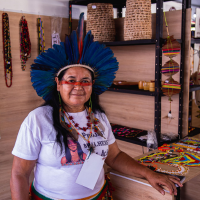
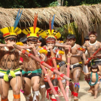
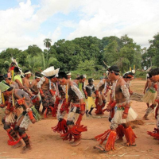

O Parque do Xingu é lar de diversas etnias indígenas que possuem uma rica cultura própria, com suas próprias línguas, crenças, tradições e rituais. Algumas das principais etnias presentes na reserva incluem os Yawalapiti, Kamaiurá, Kaiabi, Kuikuro, Ikpeng, Mehinako, Trumai, entre outros.
Cada uma dessas etnias possui suas próprias práticas culturais, incluindo arte, música, dança e cerimônias religiosas. Por exemplo, o povo Kamaiurá é conhecido por suas pinturas corporais e pela cerimônia de Festa da Moça Nova, que celebra a chegada da menstruação de uma jovem mulher e simboliza sua entrada na vida adulta. Já os Yawalapiti são famosos por seus cantos e danças sagradas, que são realizados durante rituais como a cerimônia do Kuarup, que homenageia os mortos.
Além disso, as comunidades indígenas do Parque do Xingu possuem um conhecimento profundo sobre o meio ambiente e a biodiversidade local, que é transmitido de geração em geração. Suas práticas sustentáveis de uso da terra e dos recursos naturais são fundamentais para a conservação da floresta e da fauna, contribuindo para a preservação de um dos ecossistemas mais importantes do planeta.
As principais atividades culturais das comunidades indígenas presentes no Parque do Xingu variam de acordo com cada etnia, mas algumas das mais comuns incluem:
Artesanato: produção de objetos decorativos, instrumentos musicais, cestaria, cerâmica e tecelagem, utilizando materiais naturais como sementes, fibras, madeira e argila.
Música e dança: os indígenas da região são conhecidos por suas músicas e danças sagradas, que são realizadas em cerimônias religiosas e rituais.
Festivais e cerimônias: as etnias do Parque do Xingu realizam diversos festivais e cerimônias religiosas ao longo do ano, como a cerimônia do Kuarup, Festa da Moça Nova, Festas de São João, entre outras.
